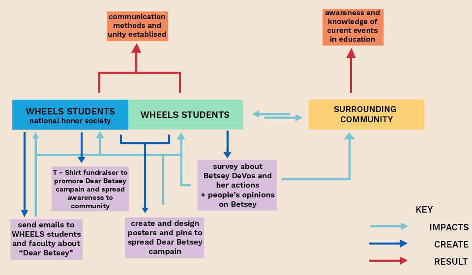
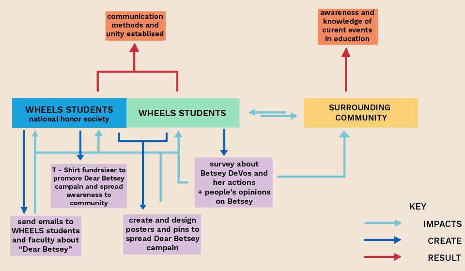
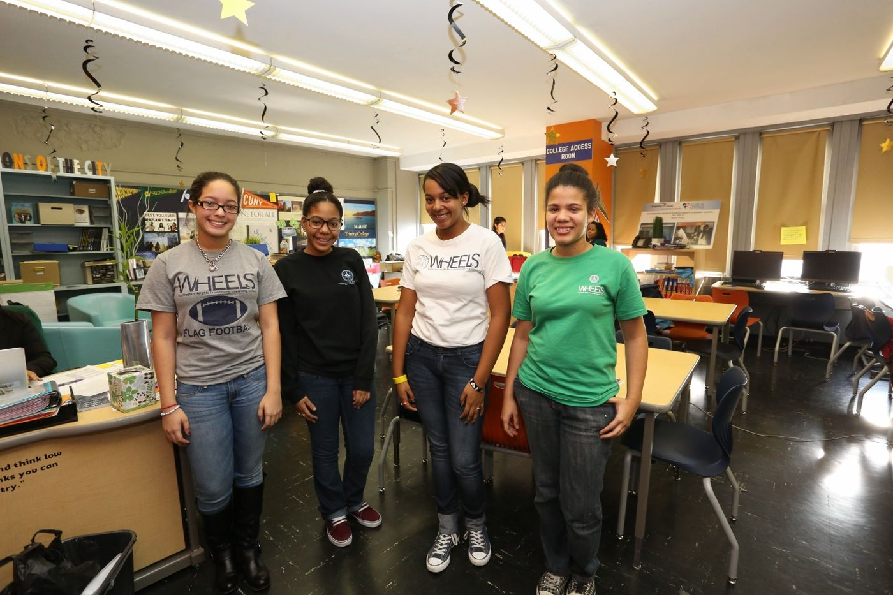
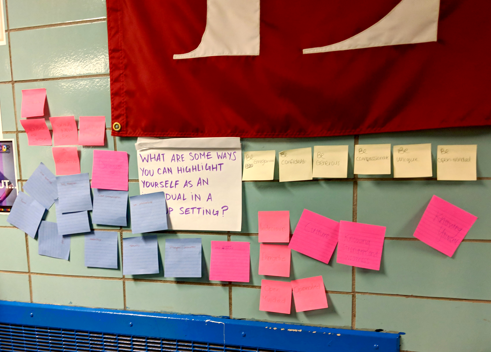
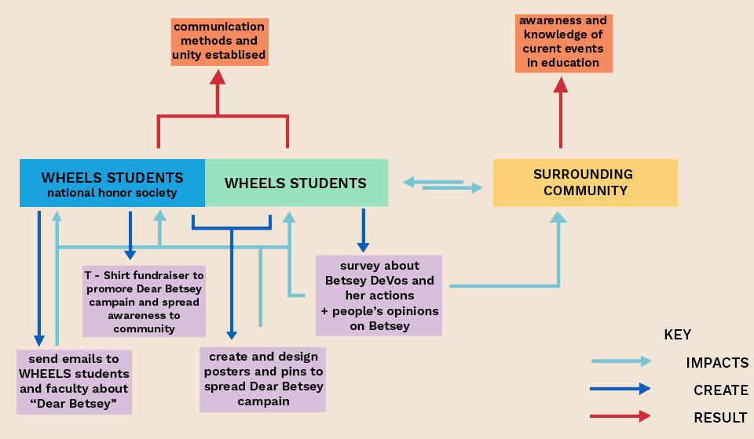

I worked on a team with other college students, and student and faculty from Washington Heights Expeditionary Learning School (WHEELS) to create a communication system within "crew" to facilitate the flow of information and ideas.
Crew is a student support system consisting of a group of 5 to 7 students and a teacher. Some support systems crew provides are homework help, college application aids, and a general safe space for students to feel welcomed and accepted. This system put in place by WHEELS created separation and little communication methods among individual crews.

We worked closely with the student and faculty at WHEELS to discover the values, goals, and needs of crew and WHEELS. Through participatory research and collaboration, we were able to discover that the crew program needed faster and effcient communication among crews, school administration, and local communities.


To test run our new system, the students created a campaign titled Dear Betsey. Students all designed and wrote postcards to the secretary of education, Betsey DeVos, to voice their opinions on a variety of issues such as guns in schools, facilities and their conditions, and much more.
TEST RUNNING NEXT WEEK...RESULTS TO COME.